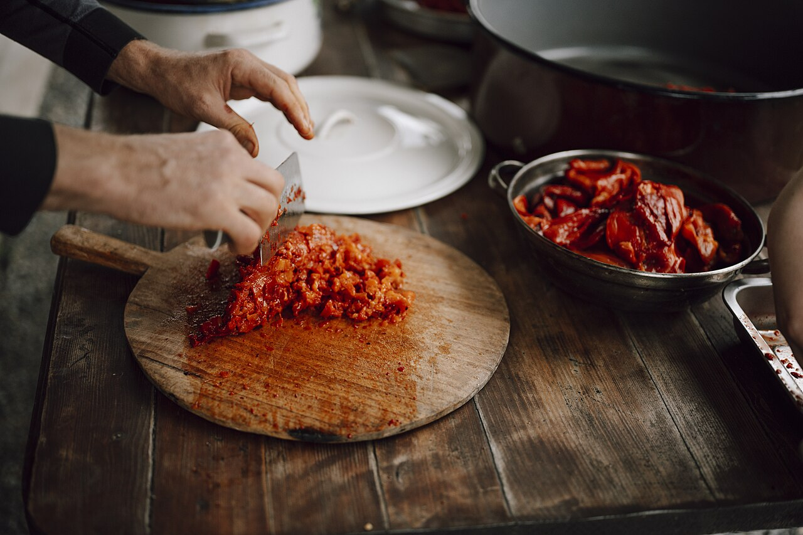

Cooking Smarter With What You Already Have
Many students, busy workers, and home cooks have everyday ingredients in their kitchens—like rice, eggs, onions, and tomatoes—but struggle to decide what meals to prepare without manually checking dozens of recipes.
FoodFinder solves this daily problem with an instant ingredient matching engine that computes match percentages, highlights missing items, and helps reduce household food waste.
Developer Information
Student Name: [Your Name]
Registration No: [Registration Number]
Module: HNDIT1052 – ICT Project (Individual)
Tech Stack: HTML5, CSS3, JavaScript & Local Storage

Key System Modules
Ingredient Matching Engine
Select available kitchen items to compute live match percentages and identify exact missing ingredients before you start cooking.
Name & Category Filtering
Browse across Breakfast, Lunch, Dinner, and Desserts or filter instantly by recipe title, difficulty level, and cook time.
Interactive Details & Timer
Check off ingredients, track cooking instructions step by step, and use the built-in countdown timer with audio chime alerts.
Browser Local Storage
Favourite recipes and Light/Dark theme preferences persist directly in your browser without requiring a backend database.